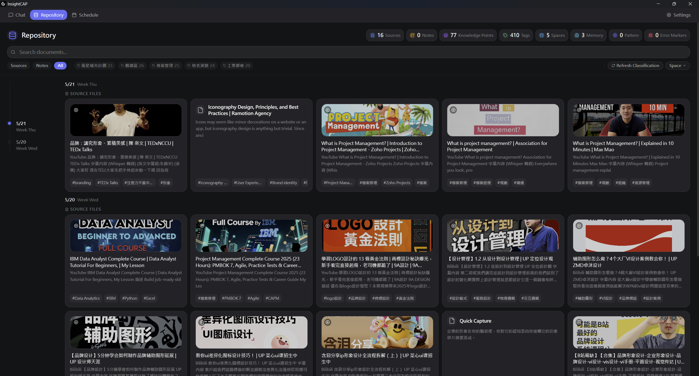

A local-first knowledge system for researchers, writers, and developers. Turn scattered web pages and notes into a connected, permanent memory.
100% Local · No Sign-up

Designed specifically for
Built for the way knowledge workers actually work — not how productivity gurus say they should.
Capture web pages, local documents, YouTube videos, clipboard content, and Telegram messages seamlessly into one base.
Your knowledge base is encrypted and permanent. Search anything you've ever captured in milliseconds.
Create projects that link related knowledge. Research, planning, and writing stay natively connected to original material.
Turn captured content into polished drafts using AI-assisted editing. Export perfectly formatted documents in multiple formats.
Send links or notes to your personal bot from anywhere. They automatically appear in your base when you're back at your desk.
Set reminders on captured knowledge so important articles, ideas, and tasks resurface at the exact right time.
"InsightCAP completely changed how I organize my research. I no longer lose track of important articles, and the fact that it's 100% local gives me peace of mind."
"The Telegram bot integration is a game-changer. I just forward links to the bot while commuting, and they are indexed and searchable when I open my laptop."
"I was tired of subscription-based cloud tools locking my data. InsightCAP's local-first architecture and instant search is exactly what I was looking for."
Grab anything from the web, local documents, videos, or Telegram. One click is all it takes.
Content is automatically extracted, indexed locally, and prepared for instant search.
Create projects that link relevant knowledge with AI discussions to preserve important research context.
Use the AI editor to draft reports or notes based on your captured knowledge. Export perfectly to Markdown, PDF, or Word.
InsightCAP is built local-first by design. Your data never touches our servers because we don't have any.
AES-256 encryption secures your database under your Windows account, protected by a 24-word recovery phrase.
Yes. The Community Edition is completely free for both personal and commercial use. No hidden fees or usage limits.
Currently, InsightCAP is optimized for Windows to utilize its local encryption protocols. Support for other platforms is being explored.
Unlike Notion, your data is 100% local and encrypted. Unlike Obsidian, InsightCAP focuses heavily on automated extraction from external sources (Web, YouTube, Telegram).
InsightCAP provides a built-in Export/Import utility to safely migrate your knowledge base. Simply copy your local database folder to your new computer and use your 24-word recovery phrase to unlock it.
This ensures your data remains completely offline and under your direct control at all times.
InsightCAP Community Edition is free to download. Get started building your personal memory today.
100% Local · No Sign-up Required